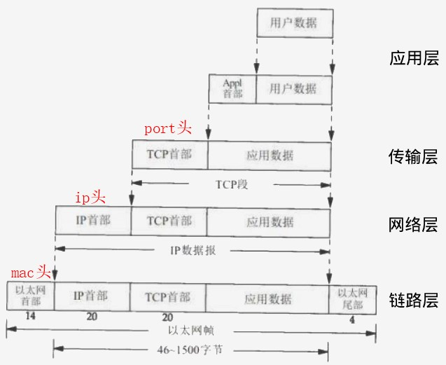
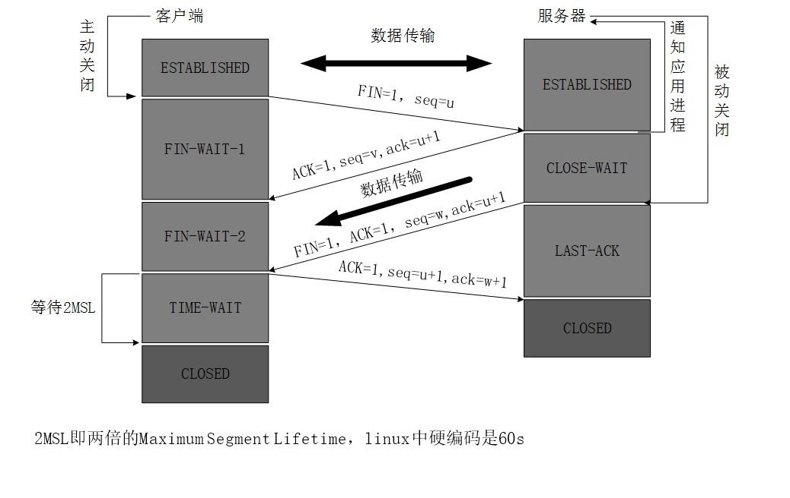
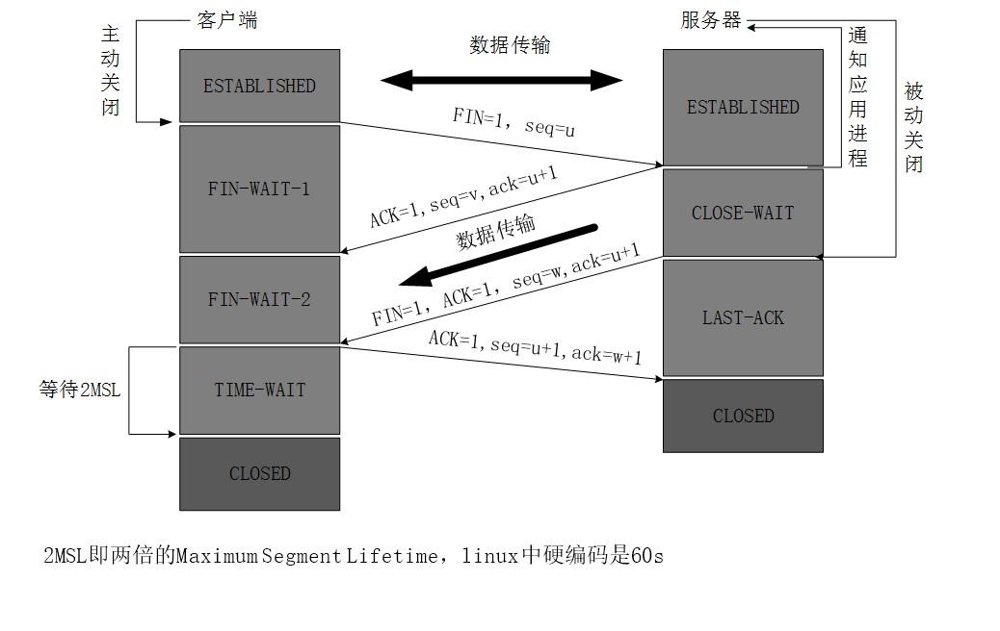
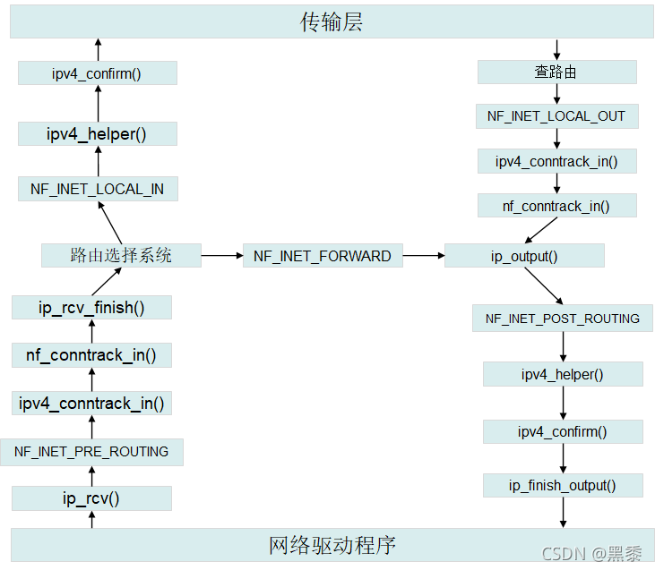

学习网络
参考资料
TCP/IP四层模型

RFC协议
| STD | 协议 | RFC编号 |
|---|---|---|
| STD 5 | IP | 791 |
| STD 5 | ICMP | 792 |
| STD 7 | TCP | 9293 |
| STD 37 | ARP | 826 详解 |
| STD 86 | IPv6 | 8200 |
| STD 89 | ICMPv6 | 4443 |
| NDPv6 | 4861，取代ARP |
三次握手四次挥手
 

conntrack
- 连接跟踪（conntrack）详述
- 没有连接跟踪只能对单个数据包进行过滤，有了后从第一个包到最后一个包都可以关联到一起
- 如ftp、sip、tftp等有控制连接和数据连接，两个连接是有从属关系的，过滤这样的包没有连接跟踪不好做
- 要实现NAT，就需要连接跟踪

TCP keepalive
| 参数 | socket级别设置 | 内核级别设置 | 说明 |
|---|---|---|---|
| tcp_keepalive | SO_KEEPALIVE | 只能在应用层设置 | 开启心跳检查 |
| tcp_keepalive_time | TCP_KEEPIDLE | net.ipv4.tcp_keepalive_time | idle时多久发一次探测 |
| tcp_keepalive_intvl | TCP_KEEPINTVL | net.ipv4.tcp_keepalive_intvl | 无ack时多久发一次探测 |
| tcp_keepalive_probes | TCP_KEEPCNT | net.ipv4.tcp_keepalive_probes | 无ack时发几次探测 |